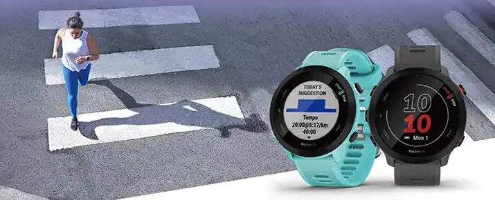
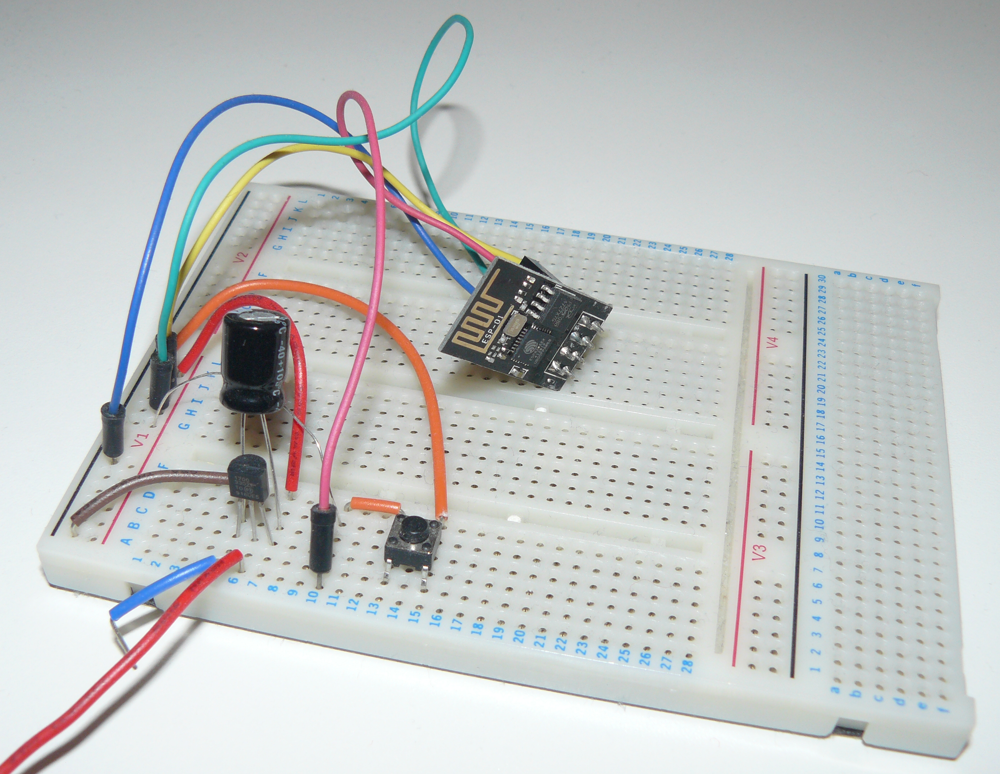

أجهزة إنترنت الأشياء حولنا
أمثلة حقيقية من الكتاب: الحاسب، الهاتف الذكي، الساعة الذكية، السماعة الذكية. اختر أي جهاز في بيتك: هل يكتفي بالاستجابة لأوامرك المباشرة، أم يقيس ويقرر ويتعلّم؟
ساعة ذكية

تتابع النشاط وتقيسه؛ جهاز يستشعر ويوصلك بنتائجك لحظيًّا.
المصدر: Wikimedia Commons — «Smartwatch on wrist»وحدة تحكم Wi-Fi

قلب الجهاز الذكي الصغير: تصل بالشبكة وتستقبل الأوامر.
المصدر: Wikimedia Commons — «ESP-01»لوحة Arduino

وحدة تحكم شائعة تُستخدم في مختبرات المدارس لبناء النماذج.
المصدر: Wikimedia Commons — «Arduino»ستة معايير لتصنيف الكائنات الذكية (من الكتاب)
قادر على الاتصال بالإنترنت • يحتوي على معالج/ذاكرة (بيانات وبرامج) • مزوّد بمجموعة مستشعرات ومُشمِّسات • يستطيع التفاعل مع مُستخدمين آخرين • يتفاعل مع البيئة المحيطة • يأخذ ويتخذ القرارات.
أمثلة من الكتاب: الهاتف الذكي، الساعات والأحذية الذكية، الكاميرات الذكية، السيارات ذاتية القيادة، الثلاجات والأفران والمكيّفات الذكية، الروبوتات والطائرات بدون طيار، الري الذكي.